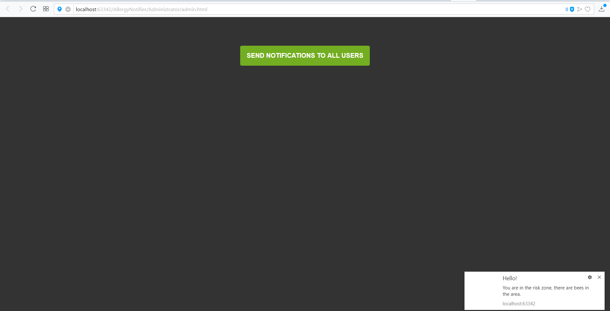

SEAL
Github authors
Project description
This project aims to alert its users to possible allergies in its area and to generate dynamic statistics for these allergies.When you agree to receive notifications, the application will also pick up your list of friends on facebook to inform them about allergies. The notification process - within the web browser - will take a certain priority or frequency depending the information you provided about yourself and the allergy type
Architecture
Diagram: The architecture
Storage of data
The first time we created a local storage where we have added the user's preferences about what is allergic to it as well as receiving notifications or not, which can be disabled. When sending notifications by admin, this local storage will be taken into account.We also created a section in my account to enable or disable these options. HTML5 local storage is a component of the Web storage application programming interface. It is a method by which Web pages locally store named key/value pairs inside a client's Web browser. Similar to cookies, this saved data exists - even when you close a browser tab, surf away from a current website, exit a browser tab or close a main browser. Unlike cookies, this data is not carried to the remote Web server unless it is sent manually. Because HTML5 local storage is natively integrated into Web browsers, it is available without third-party browser plug-ins. It is described in the HTML5 specifications.
Facebook Api
TWith facebook api we created the login to retrieve the name and the email address of the user. To use the application requires a facebook account, it can not be used without a facebook account. The Facebook API is a platform for building applications that are available to the members of the social network of Facebook. The API allows applications to use the social connections and profile information to make applications more involving, and to publish activities to the news feed and profile pages of Facebook, subject to individual users privacy settings. With the API, users can add social context to their applications by utilizing profile, friend, Page, group, photo, and event data. The API uses RESTful protocol and responses are in JSON format.This can be view in local storage.
Geolocation api
To know exactly where the user is in order to notify him correctly whether he is in a risk area or not, we used the geolocation api (he must agree to use the location) and find out the location very easily. This initiates an asynchronous request to detect the user's position, and queries the positioning hardware to get up-to-date information. When the position is determined, the defined callback function is executed. You can optionally provide a second callback function to be executed if an error occurs. An additional options object where you can set the maximum age of the position returned, the time to wait for a request, and if you want high accuracy for the position.
Ajax
We created with Ajax a page about allergies where the user can find more details about them. The pages are loaded from an external source and are rendered at the time of selection, thus allowing a better fluidity of the "About allergies" page.Reduce the site in both side request. Also reducing the time consuming on both side response. AJAX make asynchronous calls to a web server. This means client browsers are avoid waiting for all data arrive before start the rendering.
Statistics
The statistics we generated with the help of webgl 2d and here we provide different general statistics on allergies of all types to help the user understand their own hurts. WebGL (Web Graphics Library) is a JavaScript API for rendering interactive 2D and 3D graphics within any compatible web browser without the use of plug-ins. WebGL is fully integrated with other web standards, allowing GPU-accelerated usage of physics and image processing and effects as part of the web page canvas.
Admin
On this admin page we can send notifications to all users, so we can still control the new alert frequency. We can also send a notification to test the notification system (Push api). This way of interfering with the user takes advantage of maintenance and maintenance of the application.
Here we can see an example of a notification received by the user.